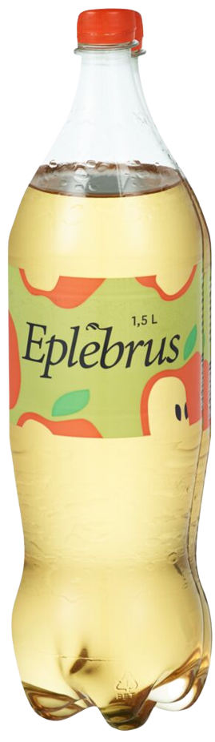

Eplebrus
Hvorfor Eplebrus er den beste brusen
Hvis du ikke er klar over det, så selger Coop en brus med sitt eget merke som heter Eplebrus. Det er da en brus med eplesmak noe de fleste liker. Jeg skal da begrunne hvorfor Eplebrus fra Coop er utvilsomt den beste brusen som finnes på markedet.

Navnet
Navnet på brusen er som sagt ''Eplebrus'', dette er et genialt navn fordi det beskriver akkurat hva denne brusen er, nettop brus med eplesmak. Detfor kommer denne brusen automatisk lengre frem til kunden enn andre bruser med mer kompliserte navn. Det er ingen Coca Cola, Fanta, Urge, eller Sprite, det er Eplebrus. Klart og tydelig, denne brusen trenger ingen forklaring fordi den er seg selv fullt ut. Forestill deg at du er en kunde som skal kjøpe brus til en fest eller kosekveld med familien. Så når du skal velge ut brus så står du der og tenker, brus er et sårt tema og folk er veldig spesifik med brusen de liker. Om du ikke treffer akurat på den brusen de liker blir det helt krise og alle vil tenke stygt om deg fordi du ikke klarte å velge riktig brus. Du kan heller ikke kjøpe en av hver brus fordi det er ikke så mange som kommer engang så det ville blitt urimelig. Så da står du der og ser på all brusen. Mange liker Cola så kanskje jeg skal ta den, men noen liker bare Cola Zero så kanskje jeg må ta en av vær, men hva med Pepsi Max. Å nei det finnes Cola Lime også, nei å nei, Cola med vaniljesmak. Hva skal man gjøre. Kanskje jeg skal ta en Cola og en Pepsi max, men hva gjør jeg med de som liker Cola Zero, Vanilje Cola, Fanta eller Sprite? Nå må du finne en brus som mest sannsynelig alle liker, hva skal det være.... Eplebrus. Det er den hvite t-skjorte og svarte buksen av brus. Det er det som går når som helst, hvor som helst. Det er det alle syns er greit. Kanskje ikke alle sin favorit brus men ingen klager og ingen hyler. Det er balanse.
Eplesmak
Eplesmak er kanskje den mest geniale smaken som finnes. Det er søtt men ikke alt for søtt, det er akkurat passe. Alle liker eplejuice, hvorfor tror du når du kommer på sykehuset og du har lavt blodsukker at du får en eplejuice. Av all juicen som finnes så får du en Eplejuice, man kan tro det er fordi den er lett tilgjengelig, men tro igjen. I følge Jason Cohen i Gastrograph AI, så er America sin favorit frukt smak netopp Eple. De har gjort grundige undersøkelser og funnet ut at Eple er den mest populære fruktsmaken som finnes, dette er nettop fordi Eple inneholder kjernesmakene Frukt, Sukker og våt, som er det mest fåretrukne smaks profilene. Eple juice er i følge Statista.com den mest foretrukne juice smaken med at 69% av deltakerne fortalte at det var en av favorit juice smakene deres. Appelsin juice var hakk i hel med 63% men Eple tok fremdeles seieren. Mange mener at appelsinjuice men etter den undersøkelsen jeg har gjort på internett har jeg konkludert at grunnen til at det er en del forvirring rundt dette er fordi appelsinjuice er mest foretrukket når det kommer til alcohol drinker mens eplejuice er mest foretrukket når det kommer til drikker uten alkohol. Men Eple leder også smaks profilen når det kommer til godteri og matretter. Det finnes en del matretter som har appelsinsmak i seg men disse er veldig spesifikke retter som ikke meange lager. Mens eple blir brukt som smakstilsetning i noen av de mest ikoniske matrettene som finnes i verden. Du har eplepai, kalkun stekt med epler, eplemost osv, dette er klart noen av de mest ikoniske og vanlige variasjonene som finnes i ulike kategorier i mat.
Lignende produkter
Det finnes mange bruser som har prøvd å gjøre noe lignende som Eplebrusen fra Coop har klart. Personlig er noen av mine favoritt bruser Mozell og Villa, men ingen av disse har helt truffet da jeg ofte har sett meg selv shifte imellom disse ulike brusene. Mozellen har en veldig god og forfriskende smak men den er full av kullsyre og får meg til å rape bekymringsfullt. Villaen derimot har en lignende smak men med mye mindre kullsyre, den føles veldig fyldig og litt varm. Så når eplebrusen kom inn i hyllene var det som englen Gabriel selv hadde kommet og gitt meg et kyss på hodet og velsignet meg med det jeg alltid hadde lengtet etter. Den perfekte midtingen, den perfekte brusen.
Flasken
Alle ting kan forbedres, men Eplebrusen er en av de få tingene som er nesten perfekt på alle mulige måter. Jeg syns ikke brussmaken i seg selv trengs å endres i noen grad men det eneste jeg irriterer meg litt over er flasken. Den har et nydelig eregonimisk design som er enkelt å ta tak i men plasten på flasken er en smule tynn og gjør at den bøyer seg en del når man heller brusen oppi glasset. Dette kan være litt problematisk når man først har åpnet flasken fordi da er det lett å søle. En annen ting som er problematisk med flasken er at korken ofte er veldig har, og det er ikke bare fordi jeg ikke er den sterkeste personen på planeten men den er en del hardere enn en gjennomsnittlig bruskork noe jeg har diskutert med andre.
Noe jeg hadde likt å se Coop gjøre er å endre på dette designet og jeg vil gjerne Pitche til dem en ny visjon for produktet.
Min visjon er å skape et bilde rundt denne brusen ved å spille på følelsen av Balanse. Denne brusen kan være en brus du kan se hvor som helst og når som helst og skal stå mellom Cola og Pepsi i bursdagsfeiringene. Det skal være brusens mellommann for alle de som ikke er en del av det store brusdilemmaet. Et nytt brusdesign ville vært essensielt og en flaske som symboliserer symetri og balanse hadde vært genialt. En flaske som minner om imsdal sin sylinder flaske med en symetrisk logo med minimalistisk stil på etiketten ville vært akuratt det som skulle trengs for at denne brusen skal oppnå dette bildet av balanse.
Oppsummering
Med navnet, smaken og de lignende produktene i tankene mener jeg man kan trygt si at eplebrusen faglig og psykoligisk er den beste brusen på markedet på grunn av dets evne til å likes av alle og å være en kilde til balanse og fred i alle menneskers liv.